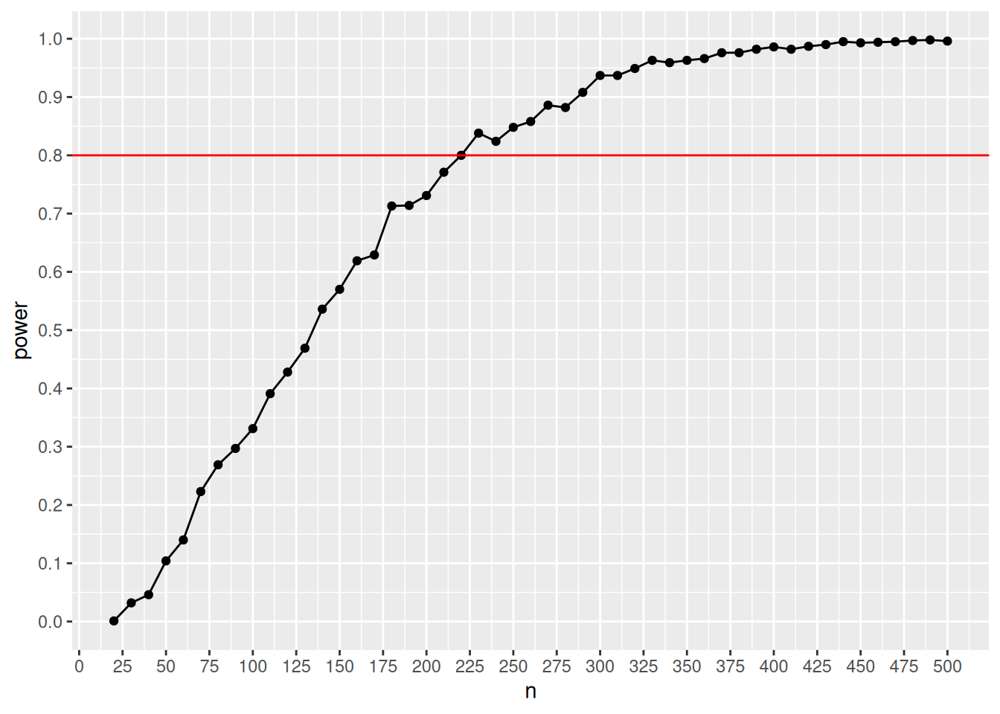

#install.packages(c("ggplot2", "DescTools"))
library(ggplot2)
library(DescTools)Ch. 3: Generalized Linear Models
Reading/working time: ~35 min.
In the previous chapters, we have learned how to conduct simulation-based power analyses for linear regressions with categorical and/or continuous predictor variables. In this chapter, we will turn to generalized linear models, which constitute a generalization of regular linear regressions. This class of statistical models additionally comprise more complex models such as logistic regression and poisson regression. However, as covering all of variants of the generalized linear models would exceed the scope of this workshop, we will only learn how to conduct a simulation-based power analysis for a logistic regression. Recall that a logistic regression is suitable for designs in which you predict a dichotomous outcome with a set of (continuous or categorical) predictors.
A power analysis for a simple logistic regression with one categorical predictor
In order to learn how a simulation-based power analysis for logistic regressions work, we build on the previous chapters by continuing to work with the BtheB data set. Please see the first chapter on linear models to get more info about this data set.
Let’s get some data as a starting point
# load the data
data("BtheB", package = "HSAUR")
# show which variables this data set includes
str(BtheB)'data.frame': 100 obs. of 8 variables:
$ drug : Factor w/ 2 levels "No","Yes": 1 2 2 1 2 2 2 1 2 2 ...
$ length : Factor w/ 2 levels "<6m",">6m": 2 2 1 2 2 1 1 2 1 2 ...
$ treatment: Factor w/ 2 levels "TAU","BtheB": 1 2 1 2 2 2 1 1 2 2 ...
$ bdi.pre : num 29 32 25 21 26 7 17 20 18 20 ...
$ bdi.2m : num 2 16 20 17 23 0 7 20 13 5 ...
$ bdi.4m : num 2 24 NA 16 NA 0 7 21 14 5 ...
$ bdi.6m : num NA 17 NA 10 NA 0 3 19 20 8 ...
$ bdi.8m : num NA 20 NA 9 NA 0 7 13 11 12 ...This data set compares the effects of two interventions for depression, that is a so-called “Beat the blues” intervention (BtheB) and a “treatment-as-usual” intervention (TAU). Note that in this chapter we will compare two active treatment conditions with each other – in the other chapters on linear models, we compare an active treatment with a passive waiting group.
Unfortunately, this data set does not include any dichotomous variable we could use as an outcome measure. Therefore, we simply dichotomize one of the continuous outcome variables to create a categorical outcome artificially. More specifically, we will dichotomize the bdi.2m variable which contains a follow-up depression measure (i.e., the Beck Depression Inventory score) two months after the intervention.
Note
Please note that we dichotomize this variable for didactic reasons only. From a statistical point of view, it is preferable to treat a continuous variable as such because dichotomizing leads to a loss of statistical information (Royston et al., 2006).
Let’s start by dichotomizing the bdi.2m variable and storing the result in a new variable which we label bdi.2m.dicho. Here, we take 20 as our cut-off value, as BDIs of 20 or more refer to a moderate or severe depression. BDI values lower than 20, in turn, reflect a minimal or mild depression (see first chapter on linear models for more info). In our new bdi.2m.dicho variable, we code minimal/mild depression as “0” and moderate/severe depression as “1”.
#dichotomize dv
BtheB$bdi.2m.dicho <- ifelse(BtheB$bdi.2m < 20, 0, 1)
#show frequencies
table(BtheB$bdi.2m.dicho, BtheB$treatment)
TAU BtheB
0 21 37
1 24 15The frequency table shows that there were less patients with moderate/severe depression in the TAU treatment as compared to the BtheB treatment. That’s a first sign that the BtheB intervention might outperform the treatment-as-usual!
In this chapter, we focus on a very simple version of a logistic regression: A model in which the dichotomous outcome variable is predicted by one categorical predictor variable, that is, the treatment condition (BtheB vs. TAU). Let’s assume that we plan to set up a study in which we want to scrutinize whether or not the “Beat the blues” intervention really outperforms the “treatment-as-usual” intervention with regard to the BDI scores two months after the end of the interventions. How many participants would we need for such a study to achieve 80% power?
Estimating the population parameters
As in the previous chapters, we first need to estimate all population parameters relevant for this study. More specifically, we will need three estimates:
- the proportion of participants in the
BtheBcondition - the probability of a favorable outcome in the
BtheBcondition - the probability of a favorable outcome in the
TAUcondition
The first parameter is pretty easy to estimate. In most cases, researchers will assign half of the participants to the treatment condition and the other half to a control condition. In this case, the probability of being in the BtheB condition would be 50%. Let’s store that in a variable called prop_btheb.
prop_btheb <- 0.5The other two estimates are only slightly more complicated to estimate. The probability of a favorable outcome in each of the conditions basically means: How many of the participants will not have a moderate/severe depression two months after completing the treatment-as-usual? And, how many of the participants will not have a moderate/severe depression two months after completing the Beat the blues intervention?
These two probabilities can only be estimated with solid pilot data. In our case, we can estimate both probabilities from the BtheB data set. The following chunk does that, rounds the estimates to two decimals, and stores the estimates in two objects called prop_tau and prop_btheb.
prob_tau <- round(
length(BtheB$treatment[
BtheB$treatment == "TAU" &
BtheB$bdi.2m.dicho == 0 &
!is.na(BtheB$bdi.2m.dicho)
]) /
length(BtheB$treatment[
BtheB$treatment == "TAU" & !is.na(BtheB$bdi.2m.dicho)
]),
2
)
prob_tau[1] 0.47prob_btheb <- round(
length(BtheB$treatment[
BtheB$treatment == "BtheB" &
BtheB$bdi.2m.dicho == 0 &
!is.na(BtheB$bdi.2m.dicho)
]) /
length(BtheB$treatment[
BtheB$treatment == "BtheB" & !is.na(BtheB$bdi.2m.dicho)
]),
2
)
prob_btheb[1] 0.71In the BtheB data set, the probability of not having a moderate/ severe depression in the BtheB condition was 0.71 and the same probability in the TAU condition was 0.47.
Now we have all we need to start simulating data. There are multiple ways to simulate this kind of data, but one very simple way is to apply the sample() function. Here, we use it twice: Once to draw for the TAU condition and once for the BtheB condition (which differ in their probabilities of yielding a positive outcome, as we have seen before). For each condition, we draw whether or not the participant has a moderate/severe depression two months after the treatment, while coding “no moderate/severe depression” with 0 and “moderate/severe depression” with 1. Let’s try this by sampling 100 observations per condition.
set.seed(8526)
#sample from distribution in "TAU" condition
tau <- cbind(
rep("TAU", 100),
sample(
x = c(0, 1),
replace = TRUE,
prob = c(prob_tau, 1 - prob_tau),
size = 100
)
)
#sample from distribution in "BtheB" condition
btheb <- cbind(
rep("BtheB", 100),
sample(
x = c(0, 1),
replace = TRUE,
prob = c(prob_btheb, 1 - prob_btheb),
size = 100
)
)We now have two data frames (labeled tau and btheB), one per condition. In the following chunk, we combine them into one data frame, change the variable names, transform the treatment variables to a factor, transform the outcome variable to an integer variable, and edit the factor levels – all of this is necessary to run our logistic regression on this data set later.
#combine data frames
simulated_data <- rbind(tau, btheb) |> as.data.frame()
#set variable names
colnames(simulated_data) <- c("treatment", "bdi.2m.dicho")
#change treatment variable to factor
simulated_data$treatment <- simulated_data$treatment |> as.factor()
#change outcome variable to integer
simulated_data$bdi.2m.dicho <- simulated_data$bdi.2m.dicho |> as.integer()
#reverse factor levels, this affects the coding of this factor in the regression analysis later
simulated_data$treatment <- factor(
simulated_data$treatment,
levels = rev(levels(simulated_data$treatment))
)With this first simulated data set, we can now perform a first logistic regression.
simulated_fit <- glm(
bdi.2m.dicho ~ treatment,
data = simulated_data,
family = "binomial"
)
summary(simulated_fit)
Call:
glm(formula = bdi.2m.dicho ~ treatment, family = "binomial",
data = simulated_data)
Coefficients:
Estimate Std. Error z value Pr(>|z|)
(Intercept) 0.3640 0.2033 1.790 0.0734 .
treatmentBtheB -1.1641 0.2968 -3.922 8.78e-05 ***
---
Signif. codes: 0 '***' 0.001 '**' 0.01 '*' 0.05 '.' 0.1 ' ' 1
(Dispersion parameter for binomial family taken to be 1)
Null deviance: 275.26 on 199 degrees of freedom
Residual deviance: 259.19 on 198 degrees of freedom
AIC: 263.19
Number of Fisher Scoring iterations: 4Here, we find a negative and significant regression weight for the treatment predictor of -1.16, indicating that the BtheB treatment led to less moderate/severe depressions as compared to the TAU treatment. But, actually, it is not our central interest to test whether this particular simulated data set results in a significant treatment effect. What we really want to know is: How many of a theoretically infinite number of simulations yield a significant p-value of this effect? Thus, as in the previous chapters, we now repeatedly simulate data sets of a certain size from the specified population and store the results of the focal test (here: the p-value of the regression coefficient) in a vector called p_values.
Let’s do the power analysis
#write a function to automize the data simulation process
simulation <- function(n, p0, p1, prop = .50) {
#sample from distribution in "TAU" condition
tau <- cbind(
rep("TAU", n * prop),
sample(x = c(0, 1), replace = TRUE, prob = c(p0, 1 - p0), size = n * prop)
)
#sample from distribution in "BtheB" condition
btheb <- cbind(
rep("BtheB", n * prop),
sample(x = c(0, 1), replace = TRUE, prob = c(p1, 1 - p1), size = n * prop)
)
#combine both data sets and do some preprocessing
simulated_data <- rbind(tau, btheb) |> as.data.frame()
colnames(simulated_data) <- c("treatment", "bdi.2m.dicho")
simulated_data$treatment <- simulated_data$treatment |> as.factor()
simulated_data$bdi.2m.dicho <- simulated_data$bdi.2m.dicho |> as.numeric()
simulated_data$treatment <- factor(
simulated_data$treatment,
levels = rev(levels(simulated_data$treatment))
)
return(simulated_data)
}
#prepare empty vector to store the p-values
p_value <- NULL
#prepare empty vector to store the results (i.e., the power per sample size)
results <- data.frame()
# write function to store results of simulation
sim <- function(n, p0, p1, prop = .50) {
#simulate data
data <- simulation(n = n, p0 = p0, p1 = p1, prop = .50)
#run regression
simulated_fit <- glm(
bdi.2m.dicho ~ treatment,
data = data,
family = "binomial"
)
#store p-value
p_value <- coef(summary(simulated_fit))[2, 4]
#return p-value
return(p_value)
}
# set range of sample sizes
ns <- seq(from = 20, to = 500, by = 10)
# set number of iterations
iterations <- 1000
# perform power analysis
for (n in ns) {
p_values <- replicate(
iterations,
sim(n, p0 = prob_tau, p1 = prob_btheb, prop = prop)
)
results <- rbind(
results,
data.frame(
n = n,
power = sum(p_values < .005) / iterations
)
)
}Let’s visualize the results.
ggplot(results, aes(x = n, y = power)) +
geom_point() +
geom_line() +
scale_y_continuous(n.breaks = 10) +
scale_x_continuous(n.breaks = 20) +
geom_hline(yintercept = 0.8, color = "red")
This plot shows that we need approx. 220 participants to achieve 80% under the given assumptions. Note that this is the overall sample size, not the size per condition! That’s it – we have performed a simulation-based power analysis for a logistic regression!
Verification with the pwr2ppl package
Luckily, there are also R packages that can perform these kinds of power analyses, for example the pwr2ppl package (Aberson, 2019). We can use this package to verify our results. Does the pwr2ppl package yield the same result? Note that you will need to install this package if you haven’t used it before.
#install.packages("devtools")
#devtools::install_github("chrisaberson/pwr2ppl")
pwr2ppl::LRcat(
p0 = prob_tau,
p1 = prob_btheb,
prop = .50,
alpha = .005,
power = .80
)Sample Size = 221 for Odds Ratio = 2.761That’s basically the same result, well done!
Using a safeguard power approach
Of note, our effect size estimates (i.e, the estimates of the probabilities of not having a moderate/severe depression two months after the BtheB or the TAU treatment) were so far based on a pilot study. However, this pilot study might not have yielded a precise estimate of these effect sizes. Thus, in order to consider uncertainty in these effect size estimates, it has been suggested to perform a safeguard power analysis (see chapter first chapter on linear models for more info) instead of a power analysis using the observed effect size. The main idea behind the safeguard power analysis is to compute a 60% confidence interval around the observed effect size and to take the lower bound of this confidence interval as an effect size estimate (see Perugini et al., 2014). Let’s try this here.
Let’s assume that we view the probability of not having a moderate/severe depression after the TAU treatment to be probably accurate, but that we want to account for uncertainty in the estimation of the probability of not having a moderate/severe depression after the BtheB treatment. We then simply calculate the 60% confidence interval around this effect size. We can use the BinomCI function from the DescTools package to do this. We need to provide this function with the number of successes (here: 37, see table above) and the number of observations (here: 52, see above).
DescTools::BinomCI(37, 52, conf.level = 0.60) est lwr.ci upr.ci
[1,] 0.7115385 0.6560993 0.761292This gives us an estimate of 0.66 for the lower bound of the 60% confidence interval of the probability of not having a moderate/severe depression after the BtheB treatment, while the point estimate for this effect size was 0.71. We can now redo our power analysis from above with this new effect size estimation. I am copying the chunk from above, while replacing the prob_btheb value with 0.66.
#prepare empty vector to store the p-values
p_value <- NULL
#prepare empty vector to store the results (i.e., the power per sample size)
results <- data.frame()
# set range of sample sizes
ns <- seq(from = 20, to = 500, by = 10)
# set number of iterations
iterations <- 1000
# perform power analysis
for (n in ns) {
p_values <- replicate(
iterations,
sim(n, p0 = prob_tau, p1 = 0.66, prop = prop)
)
results <- rbind(
results,
data.frame(
n = n,
power = sum(p_values < .005) / iterations
)
)
}
#let's plot this
ggplot(results, aes(x = n, y = power)) +
geom_point() +
geom_line() +
scale_y_continuous(n.breaks = 10) +
scale_x_continuous(n.breaks = 20) +
geom_hline(yintercept = 0.8, color = "red")
Here, we get a total sample size of ca. 360 participants in order to ensure 80% power with our safeguard estimation.
References
Aberson, C. L. (2019). Applied power analysis for the behavioral sciences. Routledge.
Perugini, M., Gallucci, M., & Costantini, G. (2014). Safeguard power as a protection against imprecise power estimates. Perspectives on Psychological Science, 9(3), 319–332. https://journals.sagepub.com/doi/10.1177/1745691614528519
Royston, P., Altman, D. G., & Sauerbrei, W. (2006). Dichotomizing continuous predictors in multiple regression: A bad idea. Statistics in Medicine, 25(1), 127–141. https://doi.org/10.1002/sim.2331